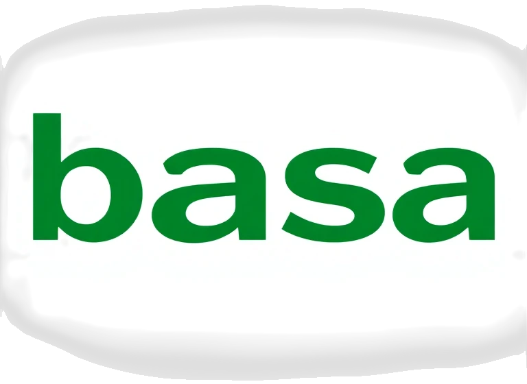

Empréstimos para CNPJ MEI e LTDA
Condições especiais para seu negócio:
MEI: Empréstimos a partir de R$ 25.000.
LTDA: Empréstimos de R$ 100.000 até R$ 1 milhão.
Nossa comissão de consultoria é de 15% sobre o valor do empréstimo liberado.
Serviços Contábeis Especializados
Assessoria contábil completa para sua empresa. Abertura e regularização de empresas, declarações, impostos, e consultoria financeira estratégica para otimizar sua gestão.
Nossos Bancos Parceiros
Trabalhamos em parceria com os principais bancos para oferecer as melhores soluções de crédito e financiamento para você e sua empresa:
-  BASA (Banco da Amazônia)
- AFEAM (Agência de Fomento do Estado do Amazonas)
- Caixa Econômica Federal